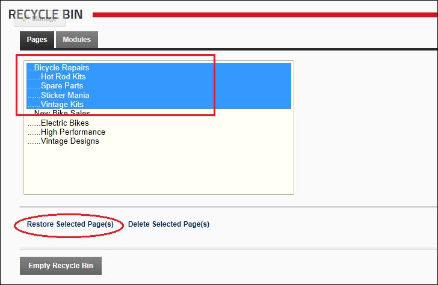

Restoring Deleted Pages
How to restore one or more deleted pages to their previous location in the site menu and their previous location in the pages list on the Page Management module. Once a page is restored, you are then able to restore the modules that were previously located on the page(s).
Authenticated users who have been granted Edit Module (Edit Content) permissions.
Restoring a parent page and it's children
- Navigate to Admin >
 Recycle Bin - OR - Navigate to a Recycle Bin module.
Recycle Bin - OR - Navigate to a Recycle Bin module.
- Select the Pages tab.
- Select both the parent page and it's child pages which are be indented below their parent page.
- Click the Restore Selected Page(s) link.

Restoring child page(s)
A parent page must be restored before it's child page(s) can be restored.
- Navigate to Admin > Recycle Bin - OR - Navigate to a Recycle Bin module.
- Select the Pages tab.
- Click on a child page name to select it. To select multiple pages, hold down the Ctrl key when selecting.
- Click the Restore Selected Page(s) link.
Restoring a parent page without children
- Navigate to Admin > Recycle Bin - OR - Navigate to a Recycle Bin module.
- Select the Pages tab.
- Select the a parent page name to select it. In the below example, the parent page that is selected is called DIY Kits and it's child pages are called Hot Rod Kits, Spare Parts, Sticker Mania, and Vintage Kits
- Click the Restore Selected Page(s) link.